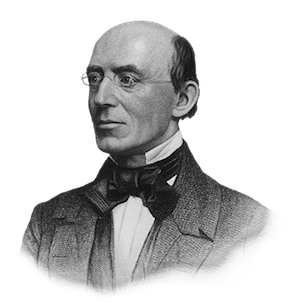

Tellers of the traditional narrative are correct in recognizing that “cotton [was] king.” After Eli Whitney invented the cotton gin in 1793, rice and tobacco quickly gave way to cotton as the South’s most valuable crop, and its importance only grew. From 1800 to the Civil War worldwide cotton demand increased by almost 500 percent, and during the same period America’s cotton consumption grew more than eight times as fast as its population. Consequently, from 1800 to 1860 the country's cotton production grew from 1.4 million to nearly 2 billion pounds annually, and from 1821 onward cotton accounted for a majority of national exports. [1] Due to its grandiose role, understanding the cotton trade was imperative to succeeding in business in the midnineteenth century. The Lehman brothers, founders of the former investment firm, and banking tycoon J. P. Morgan, among many others, began their careers in the cotton industry. [2]
To view the South as the only region of the country with a stake in slavery and its output is beyond an oversimplification, however, and leaves many crucial questions unanswered: how did Southerners pay for their slaves? Who transported the slaves from Africa to America? Who converted the South’s cotton into products, and who shipped said products to their buyers? What did Northern factories produce, and from where was their raw material derived? In reality, the distinction between the North and South was far more ambiguous. Despite owning relatively few slaves themselves, Northerners were hardly removed from the institution. [3]
Slavery began in the North not much later, and possibly more rapidly, than it did in the South. The first African slaves in New England may have arrived as early as 1624, only four years after Plymouth was founded. [4] By contrast, the first slaves arrived in Virginia in 1619, twelve years after the settling of Jamestown. [5]

The North continued to play an essential role well into the nineteenth century. Emancipation, the end of the slave trade in 1808, and embargoes imposed by the Jefferson administration precipitated a transition in the North simply from trading slaves to clothing them. [8] As early as the first decade of the nineteenth century, “New England gave evidence of being the probable future center of the cotton industry.” [9] By the eve of the Civil War, the North enjoyed in manufactured cotton a superiority over the rest of the country proportional to that the South enjoyed in raw cotton. In 1860, the Northern states manufactured more cotton textiles, by value, than all the other states combined ($83,771,156 / $117,581,531 total), consumed more raw cotton (792,521 / 978,043 total bales), invested more money in cotton manufactures ($71,060,379 / $99,195,926 total), employed more people in cotton manufactures (81,403 / 122,028 total), and housed more cotton mills (570 / 1,091 total), spindles (3,858,962 / 5,235,727 total) — that year, the city of Lowell, Massachusetts alone encompassed more spindles than did all the Southern states — and looms (93,344 / 126,313 total) than the rest of the country. [10] [11] A significant portion of that cotton returned to the South in the form of “negro cloth”: durable, sturdy and economical slave attire that nearly every Northern state produced. Since only slaves wore “negro cloth,” Northerners actually reinforced racism in the South by producing clothes that were cheap for slaveholders and distinguished blacks from whites. [12]
In addition to manufacturing cotton into cloth and garments, Northern bankers and Northern sailors financed and shipped it. A Southerner looking to purchase his first slaves often obtained a loan from a local bank, which obtained its resources from larger banks in New York. Established plantation owners also turned to Northern funds with which to expand during the planting and selling seasons. According to T he Hartford Courant, “[s]laves were usually bought on credit.” [13] The Northern states continued to lead the country in maritime commerce, furthermore, and carried by value almost 80% of the nation’s shipping between 1855 and 1858. Most Southern cotton thus traveled from farm to market or factory on Northern vessels and was grown by slaves purchased with an investment of Northern origin. [14]
This relationship fostered mutual economic interdependence between Northern manufacturers and Southern planters. Without the North, Southerners would have lacked much of the capital for purchasing slaves, their greatest domestic customer, over both the West and the South itself, of raw cotton, and a means of transporting cotton to Britain, their chief customer. Without the South, Northerners would have lacked the raw cotton for their manufactured goods, as well as goods to ship and finance. Supplying the majority of the world’s cotton — which the United States did by 1860 — was a national, not merely regional, endeavor. [15]
The two halves of the country therefore had great faith in prosperous coexistence. “Northern industrialists ... regarded both economies as complementary,” according to historian Thomas H. O’Connor. “The South produced the raw materials, the North manufactured them — and one section was an economic nonentity without the other.” [16] Northerners and Southerners were, indeed, more than business partners. When visiting Southern cities such as Charleston and New Orleans, the purchasing agents of Northern manufacturers received warm receptions from local planters, many of whom considered themselves friends of the agents' bosses. Thousands of wealthy Southerners, meanwhile, were welcomed each summer at hotels and private homes in Boston and resorts in Newport and Saratoga; and their sons attended such distinguished Northern universities as Harvard, Princeton, and Yale. [17] The close ties between Northerners and Southerners, bred by cotton, led Ralph Waldo Emerson to remark in 1846, “Patriotism for holidays and summer evenings, with music and rockets, but cotton thread is the union.” [18]
Social solidarity between the Antebellum North and South is best reflected in the status of African-Americans. Contrary to popular belief, blacks in neither region were free. Property in the South, blacks in the North lived in “a strange state of semifreedom.” [19] To begin with, emancipation in the North “was slow and uneven.” In only two states, Vermont and Massachusetts, were slaves freed immediately — in 1777 and 1783, respectively. [20] Laws in other states provided for gradual emancipation, whose terms differed from state to state but generally did not transpire for more than twenty years. As late as 1820, 16% of blacks in all Northern states, and as many as 26% in New York and 38% in New Jersey, were not free but continued to serve white masters as slaves or as indentured servants. [21] In tune with its speed, the effects of emancipation were modest.
Having gained their freedom, Northern blacks were still subordinate to whites. Through the Civil War, “[f]ree blacks were not socially, politically or economically integrated into mainstream white society.” [22] Despite constituting more than ten percent of the population in certain Northern cities, including New York, free blacks in every state but Maine, New Hampshire, Vermont, and Massachusetts were disenfranchised at the same time that property requirements for whites were ceasing. Public facilities were frequently segregated by race and racial intermarriage banned; and in Rhode Island, a curfew — to which whites were not subject — was even established prohibiting “people of colour” from being outside or having visitors after 10 p.m. [23] [24]
This comparable attitude toward AfricanAmericans extended into politics. It is important to acknowledge that abolishment of slavery does not imply opposition to slavery. Even in the North, abolitionists had little political stature. Their presidential candidate in 1844, James Bierney of the Liberty Party, received fewer than 3 percent of the popular vote and no more than 8.5% in any state; and in Boston, Massachusetts and Alton, Illinois respectively, abolitionist publishers William Lloyd Garrison and Elijah Lovejoy were the target of repeated violent assaults, resulting in the former’s exile and the latter’s death. [25] When nominated in 1860 Abraham Lincoln, who as a lawyer had defended a slaveholder, ran on a platform that opposed further expansion of slavery, not slavery itself. Republicans may have considered slavery morally wrong, but they most certainly upheld the Constitution, its commitment to property rights and its original embrace of white superiority. [26] The difference between Northern Republicans and Southern Democrats on the extension of slavery into the West lay not between bondage and freedom, but rather between introducing AfricanAmerican labor and, in Lincoln’s words, saving the “territories ... for the homes of free white people.” [27] No matter what the status of AfricanAmericans, whites came first.
Both sides also reached consensus on Cuba. Typically recognized as a Southern initiative, Cuban annexation found support in the North as well. Their motives differed along lines similar to those of cotton but reached the same goal. Northerners saw in Cuba a trading partner and resource for their sugar mills, and Southerners saw acquisition of Cuba as a means to expand slavery and increase their political clout. Linking the two was their common belief in “manifest destiny,” which manifested in two ultimately unsuccessful invasions of the island in 1850 and 1851, funded by financiers in New York and Mississippi, to overthrow Spanish rule. [28] The following year, after winning the Democratic presidential nomination Franklin Pierce, of New Hampshire, wholeheartedly endorsed Cuban annexation. [29] The Ostend Manifesto, written two years later recommending acquisition of Cuba by all means possible, thus encompassed Northern and Southern interests.
Abolitionists recognized their collaboration and condemned for the injustices of slavery not only Southerners but Northerners as well. While manufacturers and planters worked in unison, it was in fact abolitionists who preached disunity and separation.  In 1842, William Lloyd Garrison demanded “the repeal of the union between the North and the South,” and later in The Liberator called the Constitution “a covenant with death and an agreement with hell.” [30] Fellow abolitionist Wendell Phillips called upon opponents of slavery “to dissolve the American Union;” and in a 1848 speech Senator Charles Sumner denounced a “conspiracy” between “the cottonplanters and fleshmongers of Louisiana and Mississippi and the cottonspinners and traffickers of New England — between the lords of the lash and the lords of the loom.” Rejecting both the Whigs and Democrats as “representatives of the slave power,” Sumner called upon abolitionists to unite as their opponents had done to devise an exploitative alliance that he deduced, correctly, as spanning not only the South but the entire country. [31]
Historian James McPherson calls the Civil War “the war that forged a nation.” [32] While the conflict did further unify the country — such as by singularizing the previously plural noun “United States” and permanently terminating the right to secession — the states were, to a large extent, already united. [33] Given the significant common ground Northerners and Southerners shared economically and socially, the Civil War was probably not driven by differing labor types or constitutional ideologies, but as Cornell University professor Edward Baptist suggests, “over the best way to keep the stream of cotton and financial revenues flowing: keep slavery within its current borders, or allow it to consume still more geographic frontiers.” [34] [35] Whatever its primary cause, the Civil War definitely brought about the end of slavery, which not simply supplemented but simultaneously and definitively destroyed an economic institution that had brought both halves of the country together.